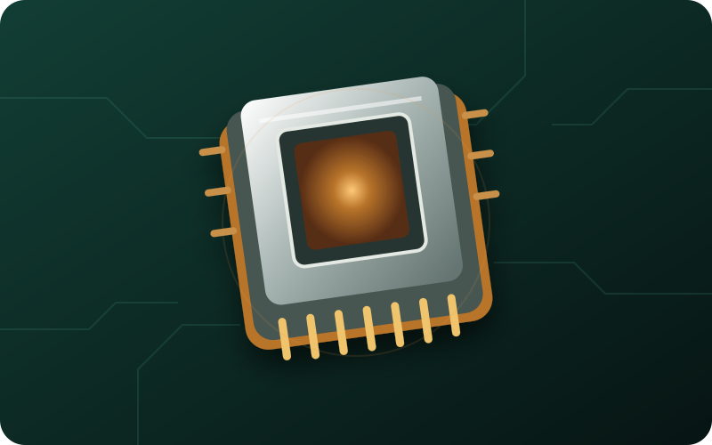

The brain of the computer
CPU
The CPU, or central processing unit, is the main processor in a computer. It follows instructions from programs.
What it does
It handles calculations and tells other parts what to do. A faster CPU can finish many tasks more quickly.
Where it goes
It sits in a special socket on the motherboard, usually under a cooler.